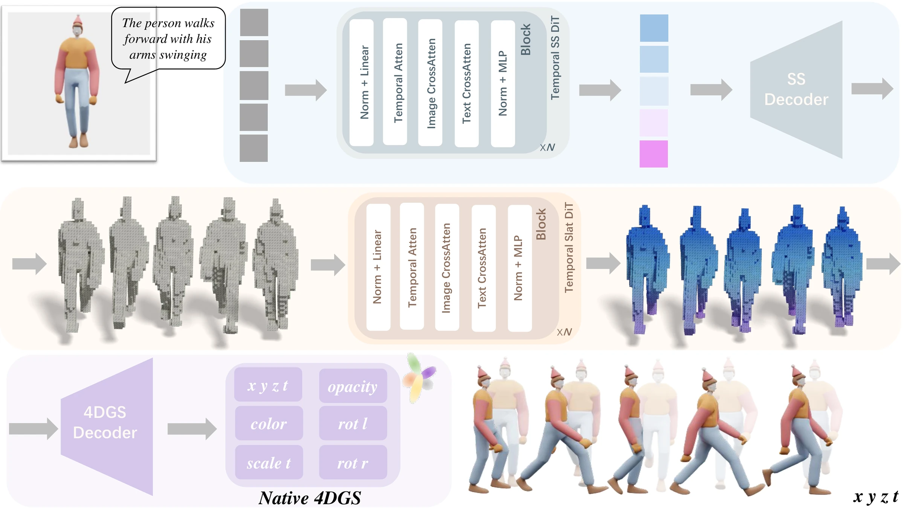

NeurIPS 2026
Native 4D Gaussian Splatting Generation with Temporally Structured Latents
From one reference image and a sentence that describes the motion, TESLA generates an animated object directly as 4D Gaussians, without reconstructing it from generated videos or optimizing it per scene. The result can be rendered from any viewpoint at any timestep.
Abstract
Diffusion models have achieved remarkable success in image, video, and 3D content creation. However, extending these successes to native 4D model generation remains challenging due to the intricate coupling between temporal geometry and appearance dynamics. Existing approaches typically generate 4D content by synthesizing videos from novel viewpoints, yet they often suffer from poor spatio-temporal consistency across views and time. To address these limitations, we introduce TESLA, a novel feedforward approach for generating native 4D Gaussian Splatting (4DGS) representations. Our key insight is to decouple temporal geometry and appearance generation through a temporally structured latent representation. This decomposition allows us to first establish coarse temporal geometry that captures fundamental structural dynamics, and then synthesize fine-grained appearance details conditioned on this geometric scaffold. To bridge this decoupled representation to the final output, we design a native 4DGS decoder that directly transforms our temporal features into native 4DGS representations, enabling flexible temporal rendering across arbitrary viewpoints and timesteps. Trained on a large collection of curated animated sequences, we extensively evaluate TESLA on the 4DGS generation task, showing superior performance over existing baselines.
Method
TESLA represents an animated object as a sequence of structured latents, one for each timestep. At every timestep, the active voxels of a 64×64×64 grid describe the coarse geometry, and a latent feature attached to each active voxel describes the local appearance. Generation follows the same split: geometry over time comes first, appearance is added on top of it, and a decoder turns the result into native 4D Gaussians.

Geometry first, then appearance
-
Sparse structure over time
Conditioned on the image and the prompt, the Temporal SS DiT generates the active voxels of every timestep. This scaffold fixes how the coarse shape moves.
-
Appearance latents
Conditioned on the scaffold, the Temporal Slat DiT generates a latent feature for each active voxel, which adds fine-grained appearance detail.
-
Native 4DGS decoding
A transformer decoder with temporal self-attention maps the latent sequence directly to 4D Gaussians, with no intermediate reconstruction stage.
Both DiTs are rectified flow models. In each block, temporal self-attention first relates the timesteps to one another. Image and text cross-attention then run in parallel and their outputs are added, so the image branch keeps the appearance of the reference while the text branch carries the motion that the prompt describes. An xyzt position embedding tells every token where and when it is.
4D Gaussians, sliced in time
Each primitive is a Gaussian over x, y, z and t, with a 4D center, four scales and a 4D rotation given by a pair of quaternions. To render at time t, it is split into a 3D Gaussian conditioned on t, which is splatted as in 3DGS, and a 1D Gaussian over time that weights it. When the rotation mixes space and time, the Gaussian is tilted, and its 3D slice moves as t advances. The decoder also predicts a color, an opacity and a learned temporal offset for each Gaussian, and its output can be rendered at any continuous timestep.
Why not generate every frame with a 3D generator? Frames generated independently share no Gaussians, so nothing ties one frame to the next and the sequence flickers. A stack of per-frame 3D Gaussians can also be rendered only at the frames it was generated for.
Training data
TESLA is trained on 45,000 animated sequences curated from DeformingThings4D, Objaverse and Objaverse-XL. Each sequence is sampled at 24 frames and each frame is rendered from 36 or 48 views, for over 1.08 million frames in total. The captions that describe each motion are written by Qwen2.5-VL.
Results
Every object below is generated from one reference image and a text prompt, and rendered from the 4D Gaussians that TESLA outputs. Select an object to see it at full size.
Front views
Rendered from a fixed camera in front of the object.
Free viewpoints
Rendered while the camera moves around the object.
BibTeX
@inproceedings{zhang2026tesla,
title={{TESLA}: Native {4D} Gaussian Splatting Generation with Temporally Structured Latents},
author={Zhang, Weiqi and Zhou, Junsheng and Fang, Juntong and Shi, Kanle and Xu, Shenkun and Liu, Yu-Shen},
booktitle={Advances in Neural Information Processing Systems (NeurIPS)},
year={2026}
}